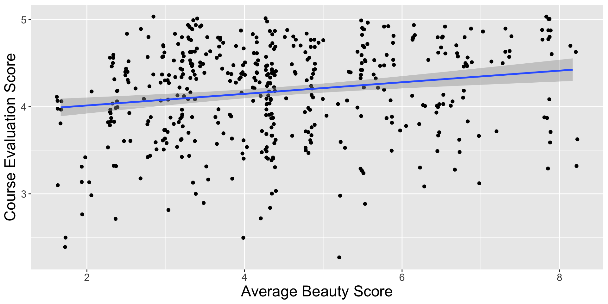
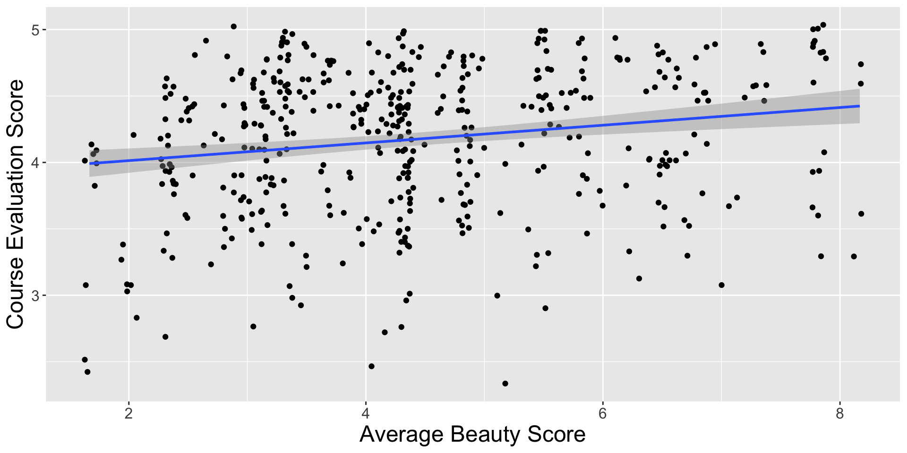
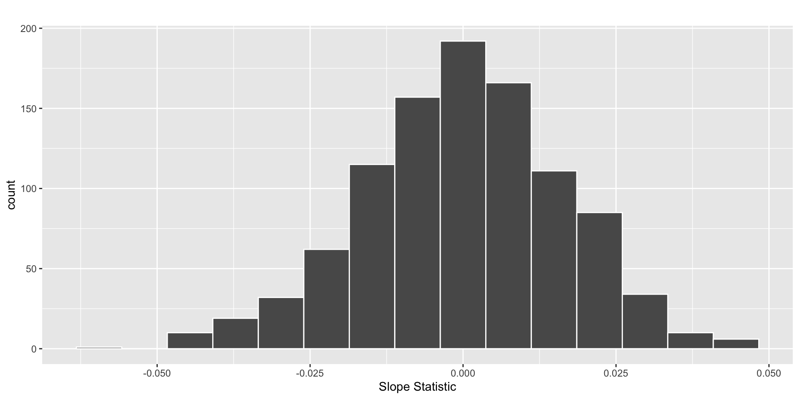
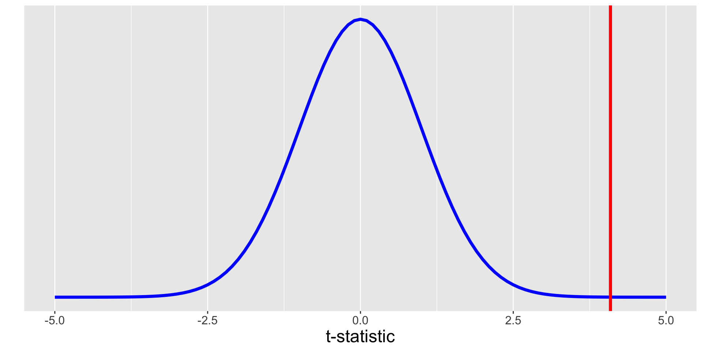
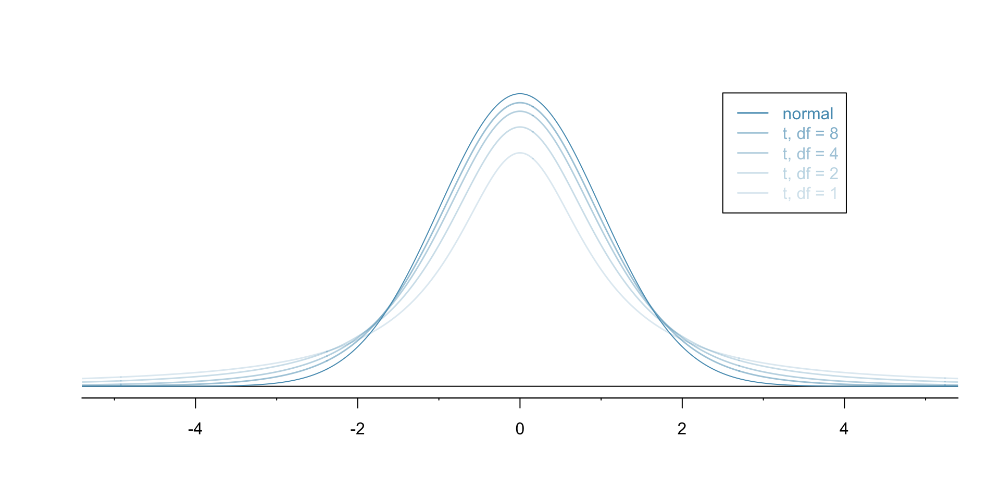

species_lm <- lm(bill_length_mm ~ bill_depth_mm * species,
data = penguins)🔬 Simulation-Based Methods versus Theory-Based Methods
Lab 7 Recap
Common Mistakes
Question 6 (Bootstrap Distribution):
- Did not use an informative axis label
Question 8 (Interpret Confidence Interval):
- Did not include population in interpretation
- Stated interval was about “all marshes” (no geographical information)
Statistical Critique 2
First Steps
- Open the directions!
- Copy the Statistical Critique template on Posit Cloud
- Copy-and-paste code from your Midterm Project
- Copy-and-paste your justification for why you chose the model you chose
Next Steps
- Fit the most complex model
- Obtain an ANOVA table of your model
- Use the p-values in the ANOVA table to decide what model is best
What is the “most complex” model?
For 1 numerical & 1 categorical explanatory variables
- Fit the different slopes (interaction) model
How do I know what model is “best” from the ANOVA table?
For 1 numerical & 1 categorical explanatory variables
- Look at the interaction line (e.g.,
bill_depth_mm:species), it is testing if the slopes are different!
| term | Df | Sum Sq | Mean Sq | F value | Pr(>F) |
|---|---|---|---|---|---|
| bill_depth_mm | 1 | 561.5708 | 561.570850 | 93.96508 | 9.384795e-20 |
| species | 2 | 7460.3201 | 3730.160057 | 624.15060 | 7.116342e-114 |
| bill_depth_mm:species | 2 | 134.2515 | 67.125732 | 11.23184 | 1.897629e-05 |
| Residuals | 336 | 2008.0631 | 5.976378 | NA | NA |
bill_depth_mm:species: With a p-value of 0.0000189, I would conclude there is evidence that the slopes are different!
How do I know what model is “best” from the ANOVA table?
For 2 numerical explanatory variables
- Look at the p-value for each variable, it is testing if that variable has a relationship with the response (conditional on the other variable being in the model)!
| term | Df | Sum Sq | Mean Sq | F value | Pr(>F) |
|---|---|---|---|---|---|
| body_mass_g | 1 | 3599.71136 | 3599.71136 | 186.673943 | 3.685224e-34 |
| bill_depth_mm | 1 | 27.41605 | 27.41605 | 1.421742 | 2.339508e-01 |
| Residuals | 339 | 6537.07813 | 19.28342 | NA | NA |
body_mass_g: With a p-value of approximately 0, I would conclude there is a relationship between body mass and bill length (after accounting for bill depth)!
bill_depth_mm: With a p-value of 0.234, I would conclude there is not a relationship between bill depth and bill length (after accounting for body mass)!
Last week we covered confidence intervals, this week we’re learning more about hypothesis tests.
Testing for a Population Slope (\(\beta_1\))
\[H_0: \beta_1 = 0\]
\[H_A: \beta_1 \neq 0\]

What do these hypotheses mean in words?
What do you think?
\(\widehat{score} = 3.88 + 0.066 \times \text{bty_avg}\)

Will we reject \(H_0\)?
How will we decide?
How will we decide?
by generating statistics that could have happened if \(H_0\) was true and comparing our observed statistic to these statistics to see how unusual it is
If \(H_0\) was true then…
\(\beta_1\) = 0
which means…
How do we generate statistics that could have happened if \(H_0\) was true?
One possible shuffle
| score | bty_avg | shuffled_score |
|---|---|---|
| 4.7 | 3.000 | 2.8 |
| 3.6 | 4.833 | 4.6 |
| 4.3 | 4.333 | 4.5 |
| 4.8 | 3.500 | 2.8 |
| 3.7 | 3.000 | 3.7 |
| 3.6 | 3.167 | 3.9 |
| 4.3 | 3.167 | 4.1 |
| 3.5 | 4.833 | 3.6 |
| 3.6 | 4.333 | 3.5 |
| 4.6 | 7.333 | 4.6 |
| 4.4 | 2.500 | 4.4 |
| 4.5 | 4.333 | 4.3 |
| 4.2 | 2.833 | 3.4 |
| 4.8 | 6.500 | 3.3 |
| 4.3 | 4.000 | 4.8 |
| 4.8 | 3.667 | 4.1 |
| 3.1 | 1.667 | 4.7 |
| 4.6 | 6.500 | 4.0 |
| 4.8 | 5.000 | 4.5 |
| 4.1 | 6.167 | 4.8 |
| 4.5 | 4.167 | 3.5 |
| 3.6 | 3.000 | 4.7 |
| 4.8 | 6.167 | 4.1 |
| 4.8 | 3.667 | 4.1 |
| 3.8 | 3.167 | 4.4 |
Which results in a slope statistic of…
[1] 0.06663704But that’s just one statistic!
But that’s just one statistic!
We want a sampling distribution of lots of statistics that could have happened if \(H_0\) was true!
Lots of statistics that could have happened if \(H_0\) was true
Where does our observed statistic fall on this distribution?

Is our observed statistic likely to happen if the null was true?
If it is unlikely to happen, then we should reject \(H_0\)!
Why???
The probability of observing a statistic as or more extreme than 0.0666 if \(H_0\) was true is approximately 0%.
So, it seems like \(H_0\) is not a reasonable characterization of the relationship.
What conclusion would you reach about the relationship between professors’ evaluation scores and their attractiveness?
The conclusion we reached depends on our p-value being reliable.
The conclusion we reached depends on our p-value being reliable.
How can we know if our p-value is reliable?
Model Conditions
For our p-value to be trustworthy, we need to know that the conditions of our model are not violated.
For linear regression we are assuming…
Linear relationship between \(x\) and \(y\)
Independent observations
Normality of residuals
Equal variance of residuals
What happens if the conditions are violated?
In general, when the conditions associated with these methods are violated, we will underestimate the true standard error (spread) of the sampling distribution.
- Our p-values will be too small!
- Our confidence intervals will be too narrow!
- We will make more Type I errors than we expect!
Linear relationship between \(x\) and \(y\)

What should we do?
Variable transformation!
Independence of observations
The evals dataset contains 463 observations on 94 professors. Meaning, professors have multiple observations.
What should we do?
Best – use a random effects model
Reasonable – collapse the multiple scores into a single score
Equal variance of residuals
What should we do?
Variable transformation!
Normality of residuals

What should we do?
Variable transformation!

What if we can’t fix a condition being violated?
For the L, I, and E conditions…
we need to ask for help!
For the N condition…
we need to use simulation instead of mathematical formulas to get our p-value and confidence interval.
Simulation-Based Methods versus Theory-Based Methods
Mathematical / Theory-based Methods
- Are a “simpler” approach
- Use formulas instead of simulation to obtain standard error
- Use \(t\)-distribution to get p-value and confidence interval
- Require that the residuals are normally distributed
How does this look?
bty_avg
0.06663704 How did R calculate the \(t\)-statistic?
\(SE_{b_1} = \frac{\frac{s_y}{s_x} \cdot \sqrt{1 - r^2}}{\sqrt{n - 2}}\)
[1] 0.01495204\(t = \frac{b_1}{SE_{b_1}} = \frac{0.067}{0.014952} = 4.4809947\)
# A tibble: 2 × 7
term estimate std_error statistic p_value lower_ci upper_ci
<chr> <dbl> <dbl> <dbl> <dbl> <dbl> <dbl>
1 intercept 3.88 0.076 51.0 0 3.73 4.03
2 bty_avg 0.067 0.016 4.09 0 0.035 0.099How does R calculate the p-value?

Different \(t\)-distributions
A \(t\)-distribution has a slightly different shape depending on the sample size. Technically, we are using a \(t\)-distribution with \(n - 2\) degrees of freedom to get our p-value.
Did we get similar results between these methods?
Did we get similar results between these methods?
Why do you think that is?
Approximating the permutation distribution
A \(t\)-distribution can be a reasonable approximation for the permutation distribution if the normality condition is not violated.

What is the relationship between life expectancy GDP per capita?
- Decide on a variable transformation
- Assess model conditions (L, I, N, E)
- Compare hypothesis test results between simulation-based methods and theory-based methods